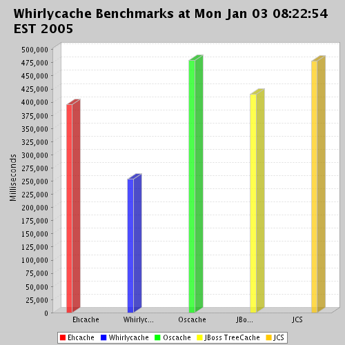

Whirlycache is a fast, configurable in-memory object cache for Java. It can be used, for example, to speed up a website or an application by caching objects that would otherwise have to be created by querying a database or by another expensive procedure. From the testing that we have done, it appears to be faster than any other Java cache that we have been able to inspect.
Download the latest release: whirlycache-1.0.1.zip You are strongly encouraged to sign up for our low-volume 'announce' mailing list so that you can be made aware of new releases.
For the impatient, here's how to get started using Whirlycache. You will first need to provide a whirlycache.xml file in your classpath as well though.
//Use the cache manager to create the default cache
Cache c = CacheManager.getInstance().getCache();
//Put an object into the cache
c.store("yourKeyName", new WhateverObject());
//Get the object back out of the cache
WhateverObject o = (WhateverObject) c.retrieve("yourKeyName");
//Shut down the cache manager
CacheManager.getInstance().shutdown();
As you can see, this is straightforward. You can have many named caches or you can just use the default cache.
If you are using Cocoon and want to use Whirlycache as the Store implementation, you should read the Whirlycache+Cocoon Howto.
As a caveat, I join you in that bubbling surge of skepticism that you may be feeling right about now. Benchmarks are almost always inherently flawed or narrow in scope. This benchmark is no different. If you would like more info about it, please check out the CVS source tree and investigate further. Errors will be taken seriously by the Whirlycache dev team. The purpose of providing this data is to encourage you to download Whirlycache and try it out and make your own judgements. In fairness, I should also note that some of the other cache implementations have features that Whirlycache does not currently have; this may be important to you.
The benchmark shows the amount of time (in milliseconds) for several popular java caches to do the following:
Create a cache Then, do this 50 times: Store 50,000 elements into the cache Then, with 20 concurrent threads: 50% of the time, read data from the cache 25% of the time, remove data from the cache 25% of the time, put data into the cachePercentages are approximate. Keys and values are very simple, short java.lang.String objects.
Whirlycache is built around several design principles that differ from other cache implementations:
Many attributes of Whirlycache are configurable in an XML file, but the most important components of the cache are the Backend, the Tuner, and the Policy.
We support pluggable backend implementations that need to implement the ManagedCache interface (which is a subinterface of java.util.Map, although not all the methods of Map need to be implemented). We currently support two backends: ConcurrentHashMap and FastHashMap. You can decide which one suits your application best. In our testing, it's hard to tell which one comes out on top all of the time. If you need to, you can even implement your own backed by implementing the ManagedCache interface.
The Tuner is a background thread that performs cache maintenance activites specified in the configured Policy implementation. One Tuner thread per cache is created and it is configured to run every n seconds. It depends on your application, but you definitely don't want to run the Tuner too often since it will only serve to burden the system unnecessarily. If your data doesn't change a lot, you could simply configure it to run every few minutes.
The purpose of the Tuner is to perform activities that would otherwise be performed by the insertion and retrieval operations (which we want to keep very lean and fast). The Tuner expires elements from the cache based on the configured Policy and the configured maxsize of the cache. Please keep in mind that the maxsize value is a softlimit that can be exceeded in between Tuner runs (remember that these only run every n seconds). When the Tuner thread runs, it will prune the cache down to the maxsize according to the rules of the Policy.
This last point is particularily relevant to those who may be inserting large objects into Whirlycache. For example, if you decide to cache 10Mb PDF files in memory, be sure that your Cache has an appropriately configured max-size and that you run the Tuner frequently enough to account for any activity that could result in something potentially disastrous such as ninety 10Mb files being inserted all of a sudden. If you don't have enough memory allocated to your JVM, you will inevitably get an exception complaining about a lack of memory! The max-size declaration in the whirlycache.xml file tells the configured Policy class to trim the Cache to n elements every time it runs. There is nothing to prevent you from successfully inserting n+1 objects into the cache. It will work, assuming you don't run out of memory.
The Policy defines the set of rules for removing elements from a cache. You can specify a different Policy implementation per named cache in the whirlycache.xml configuration file. Currently, we offer FIFO, LFU and LRU.
To use Whirlycache, simply download the latest distribution and unzip it. Then, copy all of the supplied jar files in your classpath. Finally, you will need to supply a whirlycache.xml file in your classpath as well. You need to properly configure the whirlycache.xml file according to your needs, but we have supplied you with reasonable default values that you can change later if you need to.
Here is a sample whirlycache.xml configuration file.